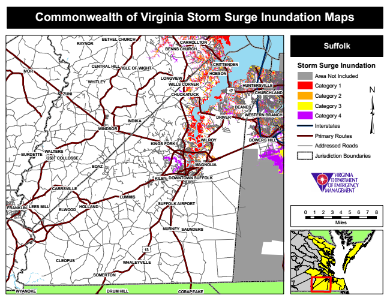

Commonwealth of Virginia Storm Surge Inundation Maps
RAYNOR
BETHEL CHURCH
CARROLLTON BENNS CHURCH
Suffolk
IVOR
CENTRAL HILL
ISLE OF WIGHT
CRITTENDEN
Storm Surge Inundation
Area Not Included
Category 1
CHUCKATUCK
CHURCHLAND
Category 2
Category 3
WESTERN BRANCH
Category 4
Interstates
Primary Routes
Addressed Roads
Jurisdiction Boundaries
BOAZ
KILBY
CARRSVILLE
SUFFOLK AIRPORT
0 1 2 3 4 5 6 7 8
Miles NURNEY
WHALEYVILLE
HOBSON
ELWOOD
LONGVIEW
FRANKLIN
WHITLEY
WALTERS
HOLLAND
CLEOPUS
SOMERTON
WILLS CORNER HUNTERSVILLE
ZUNI
17
DEANES
WYANOKE
INDIKA
DRIVER
WINDSOR
KINGS FORK
WILROY
BOWERS HILL
BURDETTE
258
COLLOSSE
MAGNOLIA
DOWNTOWN SUFFOLK
LUMMIS
LEES MILL
SAUNDERS
13
DRUM HILL CORAPEAKE